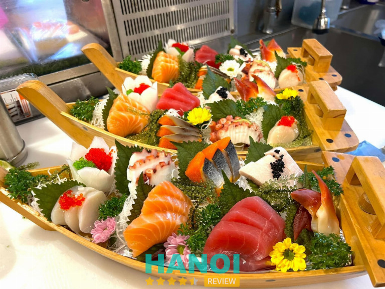
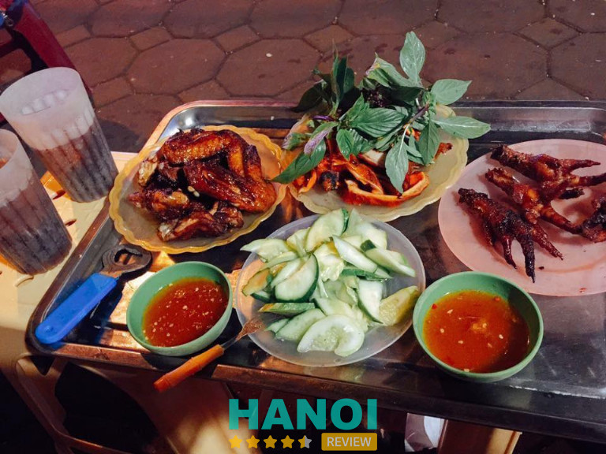
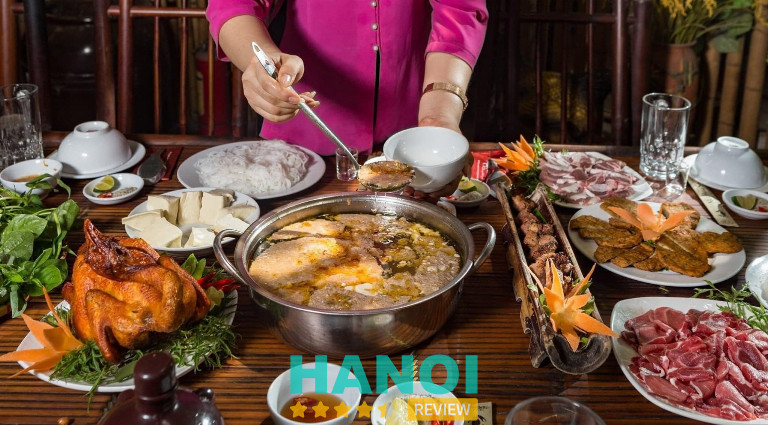
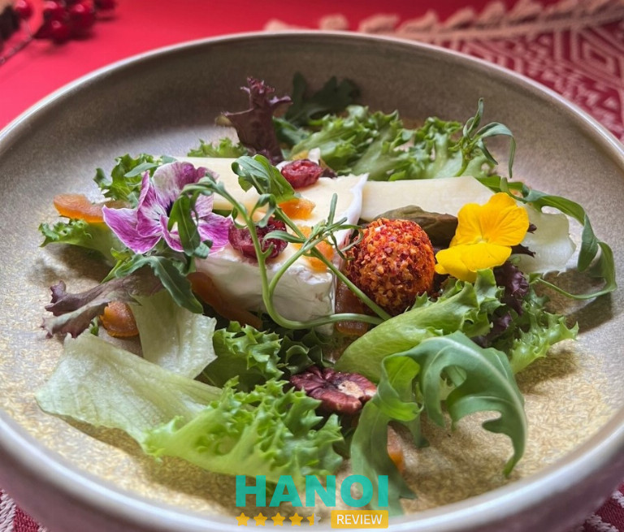
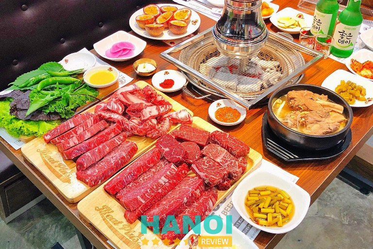
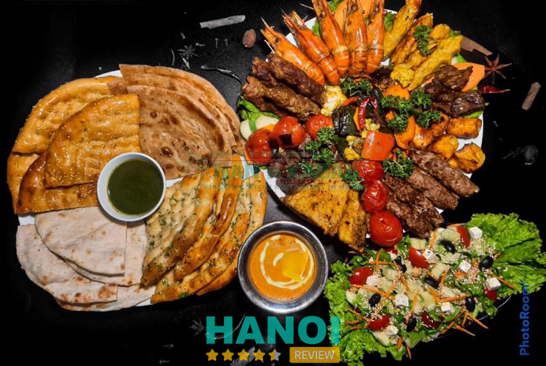
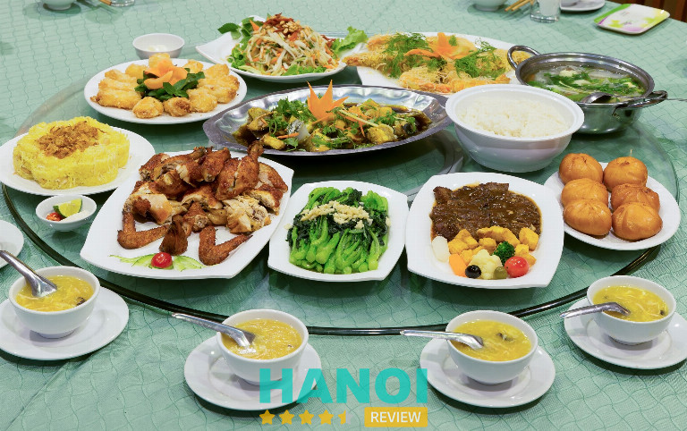
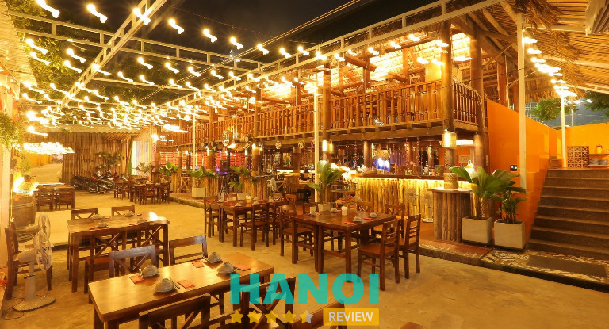
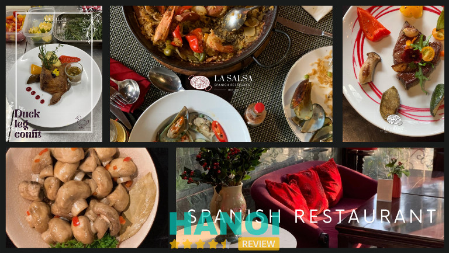

10 Quán ăn tại quận Tây Hồ ngon nổi tiếng, nhiều người yêu thích
Quận Tây Hồ, với vẻ đẹp hữu tình bên bờ Hồ Tây lấp lánh, không chỉ là điểm đến lý tưởng cho những buổi dạo chơi thư giãn mà còn là “điểm hẹn” của những người yêu thưởng thức ẩm thực độc đáo. Hãy khám phá ngay những quán ăn tại quận Tây Hồ ngon nổi tiếng, chất lượng.
Top 10 quán ăn tại quận Tây Hồ nổi tiếng, đồ ăn ngon
Ngày nay, bạn dễ dàng tìm thấy những quán ăn tại Quận Tây Hồ xuất hiện khắp nẻo đường từ bình dân đến sang trọng. Nếu bạn còn đang phân vân chưa tìm được quán ăn ngon hợp với túi tiền của mình, thì hãy xem ngay bài viết dưới đây HaNoiReview sẽ giới thiệu đến bạn đọc top 10 quán ăn tại quận Tây Hồ ngon nổi tiếng, nhiều người yêu thích bạn có thể tham khảo.
Aozora Sushi
Nhắc đến nhà hàng Sushi Nhật Bản Aozora, bạn sẽ liên tưởng ngay đến một điểm đến lý tưởng cho những người yêu thích sushi chất lượng với mức giá hợp lý. Quán không chỉ thu hút đối tượng khách rộng lớn, từ những người muốn thưởng thức đặc sản ẩm thực Nhật Bản đến những người Nhật đang sinh sống xa quê hương.

Mặc dù không gian nhỏ nhưng Aozora tạo ấn tượng mạnh với không khí ấm cúng và tinh tế. Tại đây, bạn có thể lựa chọn ngồi tại tầng 1 để thưởng thức không gian ấm áp và theo dõi đầu bếp Nhật lão làng thể hiện tài năng điêu luyện trong việc chế biến sushi.
Thực đơn đa dạng của Aozora với hơn 40 loại sushi khác nhau, từ cá hồi, mực, cá ngừ đến sushi bạch tuộc và sò dương, cũng như nhiều món ăn khác như sashimi, tempura, makizushi, lẩu kiểu Nhật và bánh xèo kiểu Nhật. Hải sản ở đây luôn tươi mới và chất lượng, được nhập khẩu hàng ngày.
Aozora là điểm đến lý tưởng cho những người trẻ muốn khám phá văn hóa và ẩm thực Nhật Bản. Còn chần chờ gì nữa hãy đến ngay để thưởng thức nào.
Thông tin liên hệ:
- Địa chỉ: 153 Thụy Khuê, Q. Tây Hồ, Hà Nội
- Điện thoại: 0988 911 033
- Email: saobangkhoc230890@gmail.com
- Website: aozorasushi.vn
- Fanpage: FB.com/RestaurantAozora/
Xem thêm: 5 Trung tâm dạy pha chế trà sữa tại Hà Nội chất lượng nhất
Chân gà Nướng Thụy Khuê
Bạn đam mê chân gà nướng và đang tìm kiếm một địa điểm tuyệt vời ở Hồ Tây? Đừng bỏ qua trải nghiệm món chân gà nướng tại quán ẩm thực đình đám Thụy Khuê. Dù không gian hơi đông đúc, nhưng đừng lo lắng, vì chất lượng ở đây sẽ khiến mọi chờ đợi trở nên ý nghĩa.
Chân gà nướng tại đây được ướp đầy ắp gia vị, mật ong khiến cho mỗi miếng thịt trở nên vàng ươm và phát ra hương thơm không thể cưỡng. Độ giòn dai của thịt chân gà, kết hợp với vị ngon của sốt thấm đều vào từng phần thịt và gân, khiến bạn khó lòng cưỡng lại sức hấp dẫn của món ăn này.

Không chỉ có chân gà, Thụy Khuê còn đưa ra những lựa chọn nướng khác như cánh gà, dạ dày, sườn, và bánh mì bơ nướng, hứa hẹn mang đến trải nghiệm ẩm thực độc đáo và phong phú. Điểm nhấn đặc biệt là nước chấm có hương vị quất, chua chua cay cay, đậm chất miền Nam, tạo nên sự mới lạ cho món ăn của bạn.
Quán không gian không quá to, nhưng khá sạch sẽ và không khí thoáng đãng sẽ làm bạn cảm thấy thoải mái khi thưởng thức. Kết hợp với một cốc trà đá lạnh hoặc một lon coca, trải nghiệm tại đây thực sự là một hành trình ngon miệng và đáng nhớ.
Thông tin liên hệ:
- Địa chỉ: 4 Thụy Khuê, Tây Hồ, Hà Nội
- Điện thoại: 0973 038 898
- Website: changanuongthuykhue.com
- Email: caophuctien9999@gmail.com
- Giờ mở cửa: Thứ Hai – Chủ Nhật ( 18:00 – 23:30 )
Xem thêm: 5 Cửa hàng bán Chocolate tại Hà Nội ngon và chất lượng hàng đầu
Bạn đang tìm một quán lẩu của đúng vị, nhưng chưa tìm được địa chỉ phù hợp với khẩu vị. Hãy thử khám phá ngay nhà hàng Lẩu Cua Đồng tại Tây Hồ, Hà Nội, đến đây bạn không chỉ được thưởng thức những nồi lẩu riêu cua thơm ngon mà còn có thể đắm chìm trong sự thuần khiết của không khí quê hương ngay giữa trung tâm phố thị.
Bữa trưa tại đây rất đa dạng với những món ăn truyền thống như lẩu cua đồng, tươi ngon, phù hợp cho mọi dịp gặp gỡ, giao lưu với bạn bè, đối tác hay ngày họp mặt gia đình.

Điều đặc biệt nhất ở đây là các món nước được phục vụ tại bàn, như lẩu cua đồng, thực đơn cá lăng, v.v. – tất cả đều chất lượng, chuẩn vị, và là biểu tượng của đặc sản từng vùng miền.
Một điểm cộng đặc biệt khi ghé vào Lẩu Cua Đồng 685 là không gian được thiết kế theo phong cách đồng quê, rộng lớn và bao phủ bởi cây xanh, tạo nên một bức tranh thịnh vượng hiếm hoi giữa lòng Hà Nội.
Nhà hàng không chỉ đảm bảo chất lượng nguyên liệu tốt nhất mà còn mang đến cho thực khách những trải nghiệm ẩm thực tinh tế và độc đáo. Bạn sẽ được thưởng thức những món ăn dân dã, nhưng với hương vị độc đáo và tinh tế. Phục vụ tận tâm, vui vẻ, và linh hoạt trong việc đáp ứng mọi yêu cầu của khách hàng là điểm mạnh của đội ngũ nhân viên tại đây.
Thông tin liên hệ:
- Địa chỉ: 685 Lạc Long Quân, Q. Tây Hồ, Hà Nội
- Điện thoại: 0944 718 989
- Email: hlowbeos1989@gmail.com
- Fanpage: FB.com/laucuadong685laclongquan/
- Giờ mở cửa: 9:00 – 23:00
Xem thêm: 10 Địa chỉ in hộp Carton tại Hà Nội chuẩn đẹp, giá hợp lý
Saint Honoré
Saint Honoré, điểm đến lý tưởng cho những tín đồ của ẩm thực Pháp, là một nhà hàng sang trọng với không gian tinh tế và trang nhã. Đến đây bạn sẽ được thưởng thức những món Âu sang trọng, mới lạ
Bạn sẽ cảm nhận được không khí trang nhã và sự hòa mình vào không gian đẹp của Saint Honoré ngay khi bước chân vào. Những món ăn Pháp truyền thống, từ bánh mì, bánh nướng đến bánh ngọt, đều được chế biến tinh tế và độc đáo, tạo nên một trải nghiệm ẩm thực đặc biệt.

Không chỉ là điểm đến ẩm thực, Saint Honoré còn là nơi để bạn thư giãn và tận hưởng không gian nhỏ xinh với sự trang trí đẹp mắt và nhẹ nhàng. Bạn có thể lựa chọn ghế ngồi phù hợp để thưởng thức bữa trưa hay tối bên những người thân yêu. Thêm vào đó, vị trí đắc địa của nhà hàng làm nổi bật sự sang trọng và thuận tiện.
Những món ăn thơm ngon, hương vị bánh thơm lừng và cocktail đặc sắc từ Pháp tạo nên một trải nghiệm tuyệt vời. Đây không chỉ là nơi dừng chân để thưởng thức, mà còn là không gian lý tưởng để bạn cùng bạn bè và người thân trải nghiệm niềm vui của ẩm thực Pháp.
Thông tin liên hệ:
- Địa chỉ: 5 Xuân Diệu, Q. Tây Hồ, Hà Nội
- Điện thoại: 024 3933 2355
- Email: marketing.st.honore@gmail.com
- Website: sainthonore.com.vn
- Fanpage: FB.com/sainthonoregastronomy/
- Giờ mở cửa: 07:00 – 21:00
Xem thêm: 10 Quán lẩu tại Hà Nội giá rẻ, ngon bất bại cho giới sành ăn
Meat Plus
Meat Plus là một quán ăn nổi tiếng tại Quận Tây Hồ, quán là sự kết hợp hài hòa giữa văn hóa ẩm thực Hàn Quốc và phong cách hiện đại. Với thực đơn đa dạng và độc đáo như dẻ sườn Hoàng Đế, dẻ sườn bò Mỹ LA, thăn nội bò Mỹ,…
Meat Plus Hồ Tây thu hút với chất lượng thực phẩm xuất sắc và không gian thoáng đãng và hiện đại. Đây là nơi lý tưởng cho mọi buổi họp mặt, nơi bạn có thể thư giãn và tận hưởng không khí ấm cúng. Với vị trí đắc địa ven Hồ Tây, nhà hàng trở thành điểm hẹn thuận tiện cho cả những sự kiện quan trọng và những cuộc hẹn lãng mạn.

Meat Plus được nhiều người yêu thích lựa chọn bởi nguyên liệu thịt bò Mỹ nhập khẩu từ Hàn Quốc, mang đến hương vị đặc trưng và chất lượng tốt nhất cho thực khách. Nơi đây không chỉ là địa điểm để thưởng thức ẩm thực mà còn là hành trình khám phá văn hóa, từ rau cuộn tươi đến các đồ ăn kèm như salad, kim chi, củ cải.
Đội ngũ nhân viên nhiệt tình và chuyên nghiệp cùng không gian sạch sẽ tạo nên không khí tràn ngập ý nghĩa cho mọi bữa tiệc.
Thông tin liên hệ:
- Địa chỉ: 73 Trích Sài, Q. Tây Hồ, Hà Nội
- Điện thoại: 0988 457 373
- Fanpage: FB.com/Meatplus.HoTay/
- Giờ mở cửa: Thứ Hai – Chủ Nhật ( 11:00 – 14:30 ; 17:00 – 22:00 )
Xem thêm: 10 Nhà hàng khu vực Hồ Tây món ăn ngon, không gian rộng thoáng
Nan N Kabab Halal Restaurant Hanoi
Nan N Kabab, một nhà hàng theo phong cách Pakistan tại trung tâm Hồ Tây Hà Nội. Với không gian sang trọng và ấm cúng, nhà hàng này không chỉ là địa điểm lý tưởng để thưởng thức ẩm thực chất lượng mà còn là điểm hẹn quen thuộc cho những người yêu thích văn hóa ẩm thực.
Thực đơn đa dạng của Nan N Kabab bao gồm nhiều món ăn truyền thống từ Pakistan, Trung Đông và Afghani. Đến với nhà hàng bạn không thể bỏ qua món thịt nướng than, bánh mì nan tươi nướng, một món ăn được nhiều người yêu thích và lựa chọn khi đến Nan N Kabab.

Không chỉ có thế, thực đơn còn cung cấp món khai vị nguội như lassi – một đồ uống yogurt truyền thống. Bạn có nhiều sự lựa chọn từ thực đơn Alacarte, mang lại trải nghiệm thưởng thức phong phú.
Những món ăn đặc sản như thịt nướng than và các món như thịt gà nướng, thịt cừu,… đều là những đặc sản thơm ngon. Bạn cũng có thể thưởng thức các món salad tươi mát để làm tăng sự thèm ăn. Nan N Kabab không chỉ là một lựa chọn ẩm thực mà còn là một hành trình khám phá văn hóa Pakistan.
Với chất lượng ẩm thực và dịch vụ chuyên nghiệp, Nan N Kabab chắc chắn sẽ mang lại cho bạn một trải nghiệm ẩm thực thoải mái và ngon miệng, hấp dẫn từ mọi góc độ.
Thông tin liên hệ:
- Địa chỉ: 49 Xuân Diệu, Q. Tây Hồ, Hà Nội
- Điện thoại: 0981 347 171 & 0862 014 588
- Email: nankababhn1@gmail.com
- Website: nannkababvietnam.com
- Fanpage: FB.com/nannkababvietnam1/
- Giờ mở cửa: 10:00 – 22:30
Xem thêm: 10 Quán lẩu tại Hà Nội giá rẻ, ngon bất bại cho giới sành ăn
Nhà hàng Phương Nguyên
Nhà hàng Phương Nguyên là một địa chỉ mang đến vô vàng món ăn đậm chất Hà Nội được nhiều người yêu thích tại Tây Hồ. Nằm tại vị trí đắc địa giữa Hồ Tây và hồ Quảng Bá làm cho quán càng thêm thu hút khách hàng.
Thực đơn đa dạng với sự phong phú từ món khai vị đến món chính và tráng miệng, Phương Nguyên là điểm hội tụ của những hương vị đậm đà của đất Việt. Khách hàng có thể khám phá những món ngon như tôm chiên trứng muối, gà nướng mật ong, cá tầm rang muối, và nhím hấp, tất cả được chế biến kỹ lưỡng từ truyền thống đến hiện đại.

Không chỉ nổi tiếng với các món ẩm thực Việt Nam, nhà hàng còn tạo ra những trải nghiệm quốc tế độc đáo như súp chiên kiểu Nhật và baba tần thuốc bắc, kích thích vị giác của khách hàng.
Với kiến trúc hình con thuyền lớn, Phương Nguyên Tô Ngọc Vân không chỉ thu hút khách hàng bằng ẩm thực độc đáo mà còn nhờ không gian đẹp và thoải mái, giúp tận hưởng cơn gió mát từ Hồ Tây và hồ Quảng Bá.
Thông tin liên hệ:
- Địa chỉ: 51/52 Tô Ngọc Vân , Quận Tây Hồ, Hà Nội
- Điện thoại: 0986 878 228
- Fanpage: FB.com/nhahangphuongnguyen
Xem thêm: 10 Tiệm bánh sinh nhật tại Hà Nội ngon, thiết kế đẹp, giá tốt
Bánh xèo Nam bộ
Một địa chỉ đồ ăn ngon ở khu vực Hồ Tây, Bánh Xèo Nam Bộ tại 163 Yên Phụ chính là lựa chọn hoàn hảo cho những ai vừa muốn ăn ngon và vừa muốn giá cả phải chăng. Dù nằm trong con ngõ nhỏ, nhưng bạn sẽ dễ dàng nhận biết quán bởi bảng quảng cáo lớn và rực rỡ.
Bánh xèo tại đây làm hấp dẫn với nhân đa dạng từ thịt, giá, mộc nhĩ, tôm,… Vị ngon được tạo nên từ sự kết hợp hài hòa của các thành phần, gia vị được điều chỉnh vừa phải. Nước mắm pha chế tinh tế, điểm nhấn từ đường, tỏi, ớt, và cà rốt, hoàn hảo khi thưởng thức cùng với bánh giòn rụm và rau xanh tươi ngon.
Không chỉ ngon miệng mà còn sạch sẽ và rộng rãi, quán mang đến cho khách hàng không gian thoải mái, đảm bảo vệ sinh. Một trải nghiệm ẩm thực đáng để thử nghiệm ngay.
Thông tin liên hệ:
- Địa chỉ: 163 Yên Phụ, Tây Hồ, Hà Nội
- Giờ mở cửa: 07:00 – 19:00
Xem thêm: 5 Quán phở bò tại Hà Nội thơm ngon, đặc trưng hương vị miền Bắc
Quán Kiến
Quán Kiến Tây Hồ là một quán ăn nổi tiếng từ các món ăn của vùng cao Tây Bắc, nơi sự sáng tạo biến côn trùng thành những món ăn hấp dẫn, làm nổi bật vị ngon và sự độc đáo.
Thực đơn phong phú của Quán Kiến Tây Hồ đưa bạn vào một cuộc phiêu lưu với các đặc sản Tây Bắc như gà đồi nướng mắc khén, thịt ngựa om, cũng như những món côn trùng độc đáo như châu chấu rang lá chanh, đuông dừa lội mắm, xôi trứng kiến.

Ngoài ra, Quán Kiến Tây Hồ không chỉ thu hút những người tìm kiếm trải nghiệm ẩm thực độc đáo mà còn bởi không gian nhà sàn hiếm có giữa lòng thủ đô.
Không gian quán rộng rãi, mang đậm kiến trúc nhà sàn Tây Bắc, tạo nên không gian độc đáo, là địa điểm lý tưởng cho các sự kiện từ nhỏ đến lớn, từ cuộc họp mặt đến tổ chức tiệc. Khu vực vui chơi cho trẻ em cũng làm hài lòng các gia đình, tạo nên không khí trải nghiệm ấn tượng và ý nghĩa.
Thông tin liên hệ:
- Địa chỉ: 3 ngách 39 ngõ 76 An Dương, Q. Tây Hồ, Hà Nội
- Điện thoại: 096 903 79 83
- Email: marketing.mam2023@gmail.com
- Fanpage: FB.com/quankienanduong/
- Giờ mở cửa: Thứ Hai – Chủ Nhật ( 10:00 – 23:30 )
Xem thêm: 10 Quán bún ốc tại Hà Nội đông khách, thơm ngon nức tiếng
La Salsa
La Salsa là một nhà hàng với không gian sang trọng và cổ điển. Nơi đây là một điểm hẹn lý tưởng cho các buổi trưa công việc với set lunch hấp dẫn.
Được biết Antoine_ Chủ nhà hàng là người Tây Ban Nha lớn lên ở Pháp, mang đến sự kết hợp độc đáo của ẩm thực Âu từ cả hai nền văn hóa. Set ăn “Spanish” hoặc “Dating” hứa hẹn mang đến trải nghiệm ẩm thực độc đáo và tinh tế.

La Salsa là địa điểm ưa thích cho các buổi tiệc doanh nghiệp mà còn có hệ thống máy chiếu và không gian sang trọng để hỗ trợ trang trí sự kiện. Những món ngon đặc sắc như Seafood Paella, Pan-Fried Canadian Cod Fish, Tapas hay Foies Gras làm cho thực khách không khỏi say mê.
Với không gian nhà kính tạo nên bức tranh lãng mạn như ngôi nhà cổ Pháp, La Salsa mang đến không gian lý tưởng cho đặt tiệc, họp mặt gia đình hoặc những cuộc hẹn hò ấm cúng. Phong cách thiết kế cổ điển Châu Âu, nội thất tinh tế và bàn ngoài trời với view hồ nhỏ làm nổi bật sự sang trọng và độc đáo của ẩm thực Âu tại Tây Hồ.
Thông tin liên hệ:
- Địa chỉ: 53 Xuân Diệu, Tây Hồ, Hà Nội
- Điện thoại : 024 3718 5656 & 0916 767 584
- Email: lasalsaxuandieu@gmail.com
- Website: lasalsahn.com
- Fanpage: FB.com/Lasalsaxuandieu
- Giờ mở cửa: 10:00 – 22:00
7 Tiêu chí lựa chọn quán ăn tại quận Tây Hồ ngon nổi tiếng, không gian thoáng mát
Để khám phá và tận hưởng những món ăn ngon và hấp dẫn của quận Tây Hồ, bạn có thể dựa vào một số tiêu chí sau đây để lựa chọn một quán ăn hợp khẩu vị cả mình:
- Không gian thoáng đãng, lãng mạn: Đầu tiên và quan trọng nhất chính là không gian của quán. Một quán ăn không chỉ đẹp bởi thực phẩm ngon mắt mà còn bởi không khí yên bình, lãng mạn. Bàn ghế được bày trí một cách hài hòa, tạo nên sự thoải mái cho thực khách và có thể ngắm nhìn cảnh đẹp ngoại ô.
- Thực đơn đa dạng, độc đáo: Mỗi quán ăn đều nên có thực đơn đa dạng, phong phú nhưng vẫn giữ được sự độc đáo của mình. Những món ăn ngon, từ những nguyên liệu tươi ngon nhất sẽ khiến thực khách có trải nghiệm khó quên.
- Chất lượng nguyên liệu: Lựa chọn một quán ăn không chỉ đơn giản là đẹp mắt, mà còn phải đảm bảo chất lượng nguyên liệu. Những thành phần tươi ngon, chất lượng cao sẽ tạo nên hương vị độc đáo và khác biệt.
- Đội ngũ đầu bếp tài năng: Đằng sau mỗi bữa ăn ngon là đội ngũ đầu bếp tài năng. Các đầu bếp có tâm huyết, khả năng sáng tạo và nghiên cứu sẽ tạo ra những món ăn ngon miệng và trang trí đẹp mắt.
- Dịch vụ chuyên nghiệp, tận tâm: Dịch vụ là yếu tố quyết định sự thành công của một quán ăn. Sự nhiệt tình, tận tâm của đội ngũ nhân viên sẽ làm cho khách hàng cảm thấy thoải mái và hài lòng, từ việc đặt bàn đến nhận đồ ăn.
- Giá cả hợp lý: Mặc dù nằm ở quận Tây Hồ, nơi thường được biết đến với sự đắt đỏ, nhưng giá cả vẫn cần phải hợp lý. Nên lựa chọn một quán ăn ngon và giá cả vừa hợp lý, vừa với túi tiền của mình.
- Phản hồi tích cực từ khách hàng: Cuối cùng, điều quan trọng là xem xét phản hồi từ khách hàng trước đó. Những đánh giá tích cực là minh chứng cho chất lượng của quán giúp bạn có cái nhìn tổng quan về trải nghiệm ẩm thực tại đó.
Có thể bạn quan tâm
- 10 Quán ăn Hàn Quốc tại Hà Nội hot nhất, khách đông nườm nượp
- 10 địa chỉ bán giỏ hoa quả biếu tết tại Hà Nội cao cấp, sang trọng.
- 5 Địa chỉ bán giỏ quà tặng trái cây tại Q. Hai Bà Trưng dịch vụ tốt
DOANH NGHIỆP: Đăng tải thông tin MIỄN PHÍ.
Tin đọc nhiều


7 Quán cafe mở qua đêm ở Hà Nội giúp bạn thư giãn bất tận
Thủ Đô về đêm vẫn nhộn nhịp và có nhiều không gian thú vị. Việc tìm quán cafe mở qua đêm ở Hà Nội giúp...

10 Quán nướng ở Cầu Giấy ngon nức tiếng, giá cả phải chăng
Nằm trong lòng thành phố, các quán nướng quận Cầu Giấy từ lâu đã thu hút được rất nhiều thực khách địa phương và quốc...

10 Quán bún đậu mắm tôm tại Hà Nội chuẩn vị, ngon khó cưỡng
Những quán bún đậu mắm tôm tại Hà Nội từ lâu luôn thu hút nhiều sự quan tâm của người dân và các thực khách...
10 Quán cafe Acoustic tại Hà Nội nhạc cực chill, view siêu đẹp
Các quán cafe Acoustic tại Hà Nội là điểm đến yêu thích của nhiều người dân địa phương và khách du lịch hiện nay. Bởi...

Trở thành người đầu tiên bình luận cho bài viết này!